艾啡熊caf'e」位在南投草屯的正義街上。 附近都是住宅區，所以咖啡店也是在私人的自宅內經營。 門外有二張白色的桌椅，顯得悠閒倒也不突兀。
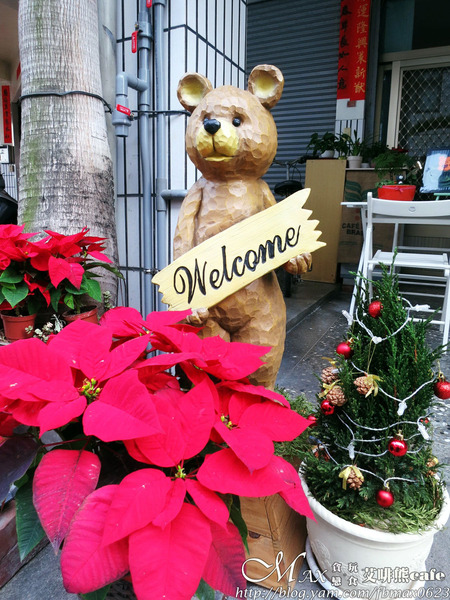 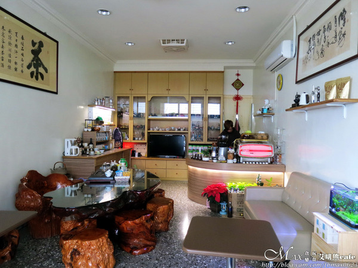打開門一看，環境跟一般家庭內裝潢並無差異。 好友的爸媽也會在這幫忙，熱情的招呼著客人 在這啜飲杯咖啡，有種回到家的放鬆愜意感。
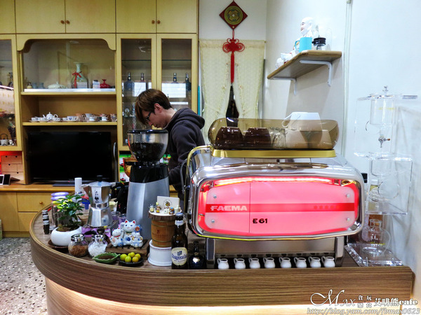小巧的工作咖啡空間，擺放的這台可是號稱有咖啡界保時捷的FAEMA E61。 要價不斐，最少要30萬，發現很多店家都有使用這台。 只為了有好的咖啡品質提供給客人喝。
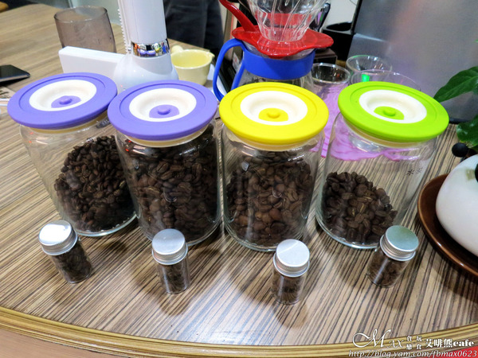工作台前有幾款咖啡豆可供試聞的動作。 咖啡豆的品種不同，口感與香氣也截然有別。
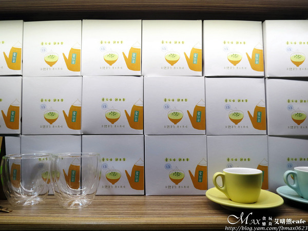 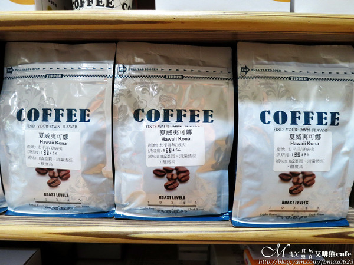還有阿里山蜜香紅茶、夏威夷可娜KONA等咖啡豆或茶包可購買。 好友當天就買了一盒蜜紅茶，讓他很喜歡。
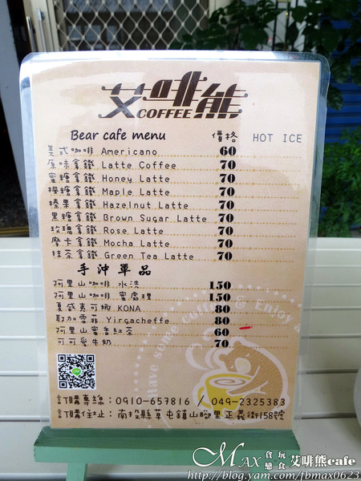MENU以咖啡拿鐵和手沖單品為主。 怕喝咖啡的可點蜜香紅茶、可可愛牛奶。 價格不貴，有冷熱的選擇。
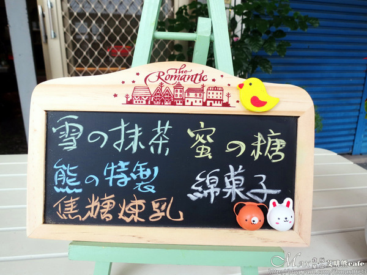小黑板上是鬆餅的口味，除了原味外，還有以上的5種加料鬆餅。 原味40元，其他一律50元。
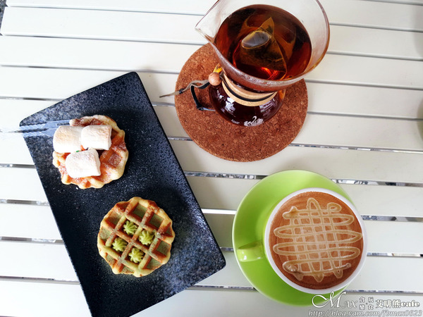我們二個人點了這些，二杯飲品和二塊鬆餅。 隨便擺設的畫面都好漂亮，喜歡這樣的氛圍。
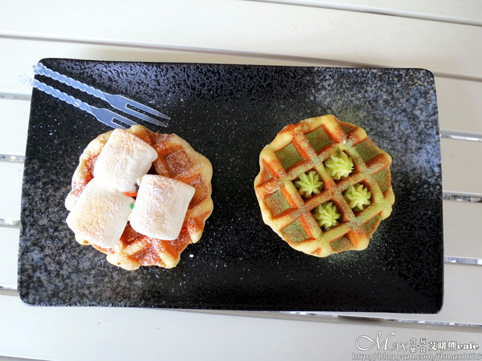左邊：棉花糖鬆餅50元、右邊：抹茶鬆餅50元
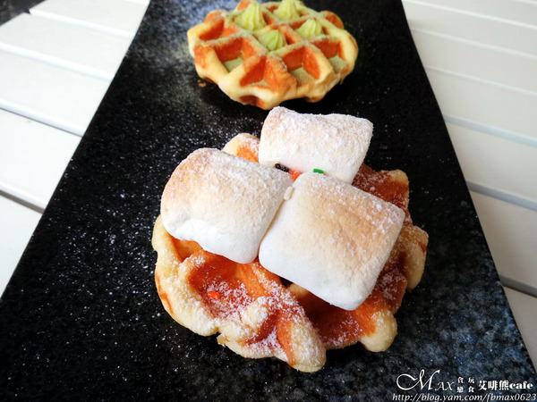鬆餅點後會先去做烘烤的動作，撒點糖粉，放上棉花糖。 棉花糖也有先烤過，會變得軟軟接近入口即化。 鬆餅是珍珠糖鬆餅，吃的到珍珠糖顆粒。 口感紮實，不會太乾，微帶甜但不膩。
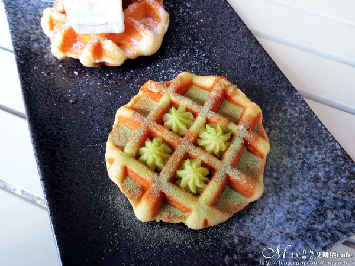原以為是以抹茶粉入味去製作的鬆餅。 用的還是原味鬆餅，撒了來自日本進口的抹茶粉。 還有鮮奶油和糖粉去打發的奶油，抹茶味淡淡。 奶油味道比較甜些，搭配鬆餅還算不錯。
使用進口咖啡豆，完成後再表面淋上蜂蜜。 剛入口是蜂蜜香，下面是拿鐵的風味。 二者搭在一起，層次感有，順口且好喝。 對了，艾啡熊鮮奶是用統一瑞穗的，不是林XX。
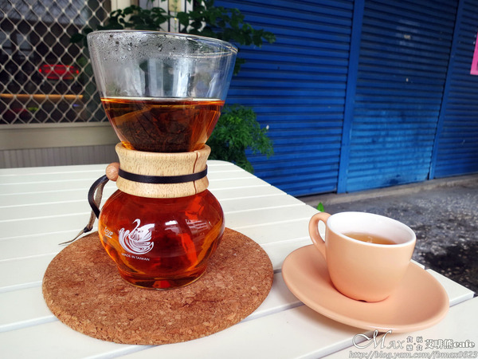阿里山蜜香紅茶是好友的親戚在阿里山種的茶葉所製成。 而蜜香紅茶居然是用烏龍茶葉，真是長了知識。 獨特的蜜香撲散出來，喝了會回甘。 茶包還能回沖，冷熱皆宜，氣味很迷人
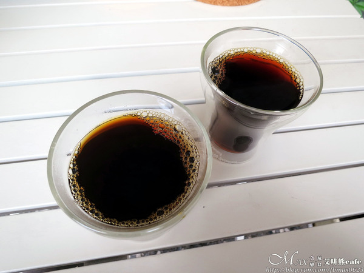水洗咖啡是將果實去除果肉後利用發酵去除果膠。 水洗的咖啡是屬淺烘培的，比較受到大眾歡迎。 酸味明顯，愈喝愈順，喉韻會回甘呢！
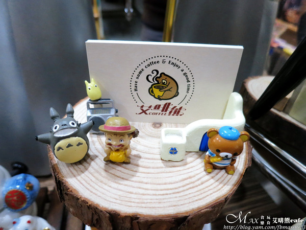 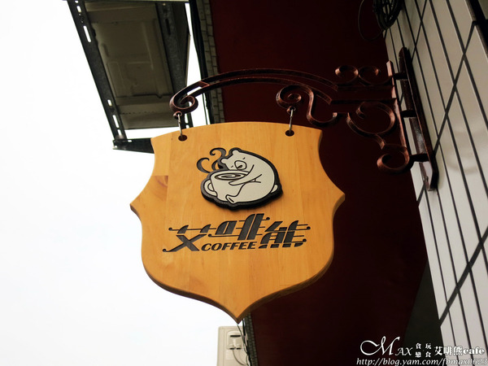最後這是艾啡熊的名片與小招牌。 logo是隻熊抱著熱騰騰冒煙的咖啡模樣好可愛。 在這冷冷的冬天裡是不是瞬間溫暖起來。
引自:http://blog.yam.com/fbmax0623/article/121379212